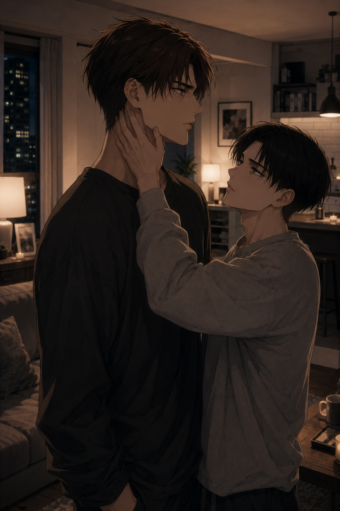

Not the way we're used to
Levi — POV

It starts with a sentence that shouldn’t matter.
Eren throws it out casually, almost under his breath, like it’s not worth holding onto. And maybe it wouldn’t be, if it didn’t land exactly the way it does. There’s no volume behind it, no visible tension yet — but it carries weight. The kind that settles instantly, that shifts something in the air before Levi even has time to process it.
“You looked comfortable.”
Levi stills slightly, just enough for it to register.
He doesn’t answer right away. Not because he doesn’t have one, but because he’s trying to understand what, exactly, that sentence is supposed to mean. Eren doesn’t look at him when he says it. He’s already half turned away, like he’s ready to drop it and move on.
Levi doesn’t let him.
“With who.”
It’s neutral. Too neutral. Controlled in the way Levi always is when something doesn’t make sense yet.
Eren shrugs.
“Doesn’t matter.”
There it is.
The point where it could still disappear if Levi chose to let it go. Where it could stay what Eren pretends it is — nothing. But he knows better. He’s seen this too many times already. If it’s been said, it’s already too late for that.
“Then why say it.”
This time, Eren reacts.
Not loudly. Not yet. But there’s a shift — sharper, immediate. His shoulders tense, his jaw setting just enough to betray him.
“I said it’s nothing.”
Levi exhales quietly, but there’s something colder in it now.
He could stop here. Let it die. Move on.
He doesn’t.
“You don’t say nothing like that. If you're bothered by something, let's talk.”
Eren turns to look at him properly this time, and the restraint cracks just a little. Not enough to explode yet — but enough to make it inevitable.
“Why do you care.”
Wrong question.
Levi’s gaze sharpens almost instantly.
“Because you said it.”
That’s when the tension stops pretending.
It doesn’t stay quiet anymore. It shifts, faster now, building in real time instead of in silence. Eren’s composure slips, frustration surfacing in the way he moves, the way he breathes, the way he looks at Levi like he’s already arguing with something that hasn’t been said out loud yet.
Levi sees it happen.
And instead of stepping back, he meets it.
“Speak your mind properly.”
Eren lets out a short, sharp breath — almost a laugh, but there’s nothing amused about it.
“You want me to say it properly?”
There’s the edge now. The one that means it’s already too far in to be dismissed.
Levi doesn’t move.
“Yes.”
A beat.
Then it breaks.
“You looked too comfortable with him, alright?”
It’s not shouted, but it hits harder that way.
Levi doesn’t flinch.
Not outwardly. But something in his posture stills, sharpens, like the sentence didn’t just land — it settled somewhere deeper than it should have. He doesn’t rush to answer this time. Not because he doesn’t have one, but because he understands, now, that whatever he says next is not going to be enough on its own.
Eren doesn’t give him the time anyway.
Once it starts, it doesn’t stop.
“It’s not just that. It’s the way you were standing. The way you were looking at him. Like you weren’t thinking about anything else for a second. Like you didn't even see he's not appropriate.”
His voice isn’t loud, but it’s tight, controlled in the way something is when it’s about to slip. His eyes don’t leave Levi now. Not anymore. He’s too far in to back out.
“And I know how that sounds,”
he adds quickly, like he already hates what he’s saying but can’t stop it from coming out.
“I know it’s stupid. I know it probably didn’t mean anything. But that’s not the point.”
Levi watches him, silent, letting him go through it without interrupting.
“The point is that I saw it, and I couldn’t unsee it. And then I’m standing there like an idiot trying to act like I don’t care, like I’m not thinking about it, and I am.”
His hand drags through his hair again, more abrupt this time.
“And it pisses me off, because I shouldn’t be thinking like that. I know you. I know you wouldn’t—”
He cuts himself off, jaw tightening.
“But I still did.”
There’s frustration in it now. Not at Levi. At himself.
“And then you just… answer like that. Like it’s nothing. Like I’m supposed to just switch it off because you said it doesn’t matter.”
Levi’s expression shifts, barely noticeable, but enough to show he’s listening differently now.
“That doesn’t do anything for me,”
Eren continues, sharper again, because now he’s fully inside it.
“You explaining it doesn’t make it go away. It just makes me feel like I’m the only one stuck in it.”
The words hang there, heavier than anything he’s said so far.
Levi doesn’t interrupt.
He lets the silence settle just enough for Eren to decide if he’s done.
He’s not.
“I don’t need you to tell me what happened,”
Eren says, quieter now, but more direct.
“I need to feel like I’m still the only one you’re here with.”
That lands differently. Not sharp, not defensive, honest.
Eren exhales slowly after that, like saying it out loud took more out of him than the rest combined. His shoulders drop just slightly, but his gaze stays locked on Levi, waiting this time. Not for an explanation.
For something else.
Levi feels the instinct rise anyway.
It’s immediate, almost automatic. The need to answer, to clarify, to strip everything down to something clean and undeniable. He knows how to do this. He has nothing to hide. It’s the way he understands things, the way he fixes them.
So he speaks.
“There’s nothing there.”
His tone is steady, controlled, but firmer now. More deliberate.
“I didn’t look at him like that. I wasn’t thinking about anything else. Someone asked me something, I answered. That’s it.”
He holds Eren’s gaze, making sure every word lands exactly the way he intends it to.
“There was nothing inappropriate. Nothing hidden. I didn’t see anything worth noticing.”
It’s precise. Complete. There’s no gap in it, no room left for interpretation.
It should be enough, but it isn't.
Eren doesn’t argue. That’s how Levi knows it didn’t reach him. There’s no pushback, no contradiction, no attempt to prove him wrong. Just that same look — distant in a different way now, like the explanation passed straight through him without settling anywhere. His shoulders are still tense. His breathing still off. His eyes don’t soften.
If anything, he looks more alone in it.
Levi feels it then.
Not the jealousy. Not the accusation itself. Something else, quieter, sharper. The simple fact that Eren could even think it.
That somewhere, even for a second, it made sense to him that Levi could look at someone else like that — that he wasn’t enough to hold all of his attention.
It settles deeper than he expects. Not enough to make him pull away, but enough to sting.
His jaw tightens slightly — the only sign of it.
Because he understands it. Too well.
He knows exactly what that feels like. That sharp, irrational pull when someone gets too close to what’s yours. That instinct to read into things that don’t deserve it. That need to hold on tighter when something feels even slightly off.
He’s no different.
So he doesn’t throw it back at him — even if it would be easy to.
Doesn’t say “you’re wrong”.
Doesn’t make it about the fact that it shouldn’t even be a question.
He lets the hurt sit where it is — controlled, contained — and chooses, deliberately, not to make it heavier, for once.
Because right now, this isn’t about being right.
It’s about not losing him to something that isn’t real.
Now he feels it. The disconnect. Not between what he said and the truth — but between what he said and what Eren actually needed.
He watches Eren for a second longer, and something shifts.
Because Eren isn’t listening for answers. He’s looking for something else entirely. And Levi, for once, recognizes it before it’s too late.
So he doesn’t speak. He moves.
It’s not sudden, not aggressive, but there’s no hesitation in it either. He steps forward, closing the space Eren hasn’t tried to take back this time. Close enough that it forces his attention to stay here, not drift back into whatever version of things he had built before.
Eren doesn’t move at first, but there’s tension in him again, different this time. Not pulling away. Not fully staying either.
Levi doesn’t give him the time to decide.
His hand comes up, steady, deliberate, settling against Eren’s jaw. Not rough. Not soft enough to be ignored. Enough to ground him, enough to make it impossible to look anywhere else.
Eren’s breath catches slightly, more from the shift than the contact itself.
“Levi—”
Levi doesn’t let him finish.
“No.”
It’s quiet, but it carries more weight than anything he said before.
He adjusts his grip just enough to guide his face back toward him when Eren tries to look away, forcing the eye contact he had been avoiding earlier.
“Stay here.”
It’s not an order, not a request either. It’s something in between, something that leaves no space for Eren to disappear without making it a conscious choice.
And he doesn’t.
Not immediately, at least.
There’s resistance, still. In the way his shoulders remain tight, in the way his hands hover like he doesn’t know where to put them, in the way his gaze flickers for a second before settling back on Levi’s.
Levi holds it.
Not forcing anything else. Not speaking yet.
Just staying exactly where Eren said he needed him to be.
Right there. Present. Unmoving.
“I’m here,” he says finally, quieter now, but steady in a way that doesn’t leave room for interpretation. “I’m not going anywhere.”
It’s not long. Not detailed. Not explained. But it lands, somehow. Not immediately, no, not completely. Eren doesn’t relax all at once, doesn’t suddenly let go of everything he was holding onto. That wouldn’t be real.
But something shifts.
His hands move first, almost unconsciously, settling against Levi’s sides like he needs something solid to confirm what he’s hearing.
Levi doesn’t move away.
If anything, he leans in just slightly, closing the last fraction of distance between them.
“You’re the one I’m here with,” he adds, just as steady. “Not anyone else.”
That’s when it shifts.
Not completely. Not cleanly.
Eren exhales, but it’s uneven, still caught somewhere between tension and release. He doesn’t pull away, doesn’t step back — but he doesn’t melt into it either. Not yet.
His hands settle against Levi’s sides, gripping slightly, like he needs something solid to hold onto — but his gaze stays sharp, searching, not done.
“Don’t do that halfway.”
Levi’s brows draw together, just slightly.
“Don’t just say it and think that’s enough.”
There’s no anger in it now, just honesty. Raw, unfiltered, still a little unsteady.
“I don’t like when that happens.”
His grip tightens unconsciously.
“I don’t like feeling like someone else can get your attention like that and you don’t even notice it.”
Levi goes still again. He's not defensive this time, he's listening.
“It’s not about him,”
Eren continues, quieter now, but more grounded.
“It’s about the fact that I’m standing there and I feel like I’m not the only thing you’re focused on anymore.”
The words sit heavy between them.
This time, Levi doesn’t try to dismantle them.
He steps in closer instead.
Not to stop Eren from speaking — but to make sure he doesn’t drift away from what he just said.
His hand stays at Eren’s jaw, thumb pressing just slightly, grounding, deliberate.
“Look at me.”
Eren already is.
Levi holds his gaze, steady, unwavering in a way that leaves no space for misinterpretation.
“I don’t look at anyone the way I look at you.”
No hesitation. No softening. Just truth, delivered exactly where Eren needs it.
“Do you really think I’d let anyone else have that?”
“I wasn’t distracted. I wasn’t interested. I answered someone and that was it.”
His grip shifts slightly, not tighter — just more present.
“You think I don’t notice when someone tries something?”
A pause.
“I notice.”
His voice drops, quieter now, but heavier.
“I just don’t care.”
Eren’s expression shifts, just slightly, something in the tension loosening — but he’s still holding on, still testing it.
“You didn’t look like you didn’t care.”
Levi doesn’t look away.
“Then look again.”
And he doesn’t move.
Doesn’t fill the silence.
Doesn’t explain more than necessary.
He just stays there, exactly where Eren asked him to be — present, focused, undeniable.
For him. Only him.
Eren’s grip loosens slowly this time, not because he’s letting go, but because he doesn’t need to hold on as tightly anymore.
His forehead dips forward, resting briefly against Levi’s, his breath finally evening out.
“…I don’t like feeling like that.”
It’s quieter now.
Less sharp, more real.
Levi’s hand shifts slightly, sliding from his jaw to the back of his neck, keeping him close without forcing it.
“Then don’t stay in it alone.”
A beat.
“If something’s off, you say it. Like you just did.”
No judgment. No dismissal. Just… acceptance of it.
Eren lets out a breath that almost sounds like a quiet laugh, tired but lighter.
“Yeah. It's gonna take me a minute.”
Levi hums quietly, not disagreeing.
He doesn’t move away.
Doesn’t loosen his grip either.
If anything, his hand settles more firmly at the back of Eren’s neck, keeping him there without forcing it, like he’s not giving him the option to drift again.
Eren stays where he is this time.
Not fully relaxed. Not completely steady yet. But closer. Present.
Levi watches him for a second, something quieter in his gaze now, something that hasn’t left since earlier.
“You don’t get replaced.”
It’s not said lightly. Not thrown in to soothe him.
“Not by anyone. Not for a second.”
His thumb shifts slightly against Eren’s skin, grounding, deliberate.
“There’s no one else I look for, ever.”
Eren’s grip tightens again, just for a second — not from tension this time, but from something else. Something that finally settles slowly.
Levi leans in just slightly, closing the last space that was still there, not breaking eye contact.
“I don’t move,”
he adds, quieter now, but more certain than anything else he’s said.
“I'm all yours.”
That does it.
Not all at once. Not dramatically.
But Eren finally lets go of the last bit of resistance, his forehead pressing back against Levi’s, his breathing evening out properly this time.
His hand shifts, sliding from Levi’s side to his shirt, holding onto it like he needs to feel that he’s still there — that he didn’t imagine any of it.
Levi doesn’t pull away.
Doesn’t soften it into something lighter either.
He just stays exactly where he said he would.
Close. Steady. Real.
“…I love you,”
It’s low. Almost lost in the space between them.
But it’s there.
Levi doesn’t hesitate this time.
“I know.”
A beat.
His hand tightens slightly at the back of Eren’s neck, keeping him there, just enough to make it impossible to miss what comes next.
“I love you too. Way more.”
The words settle between them without resistance.
Eren doesn’t answer right away. He just stays there for a second, close, breathing steady now, like he’s letting it actually reach him instead of questioning it.
Levi doesn’t give him time to drift again, his hand shifts slightly, guiding him just enough before he leans in — brief, direct — pressing a kiss to his mouth. Not soft. Not hesitant. Just enough to ground it in something real.
When he pulls back, he doesn’t go far.
“Come here.”
It’s quieter now. Not an order. Not quite a suggestion either. His thumb brushes once against Eren’s bottom lip, almost absentminded, like the tension finally has somewhere to go.
“We’re not doing this all night.”
A pause.
“We can order something. Sit down. Watch something stupid.”
There’s something lighter in it now. Not dismissing what just happened — just refusing to let it take more space than it should.
Eren lets out a breath that sounds almost like a quiet laugh, the last edge of it finally breaking.
“…yeah. Okay.”
He doesn’t move away. If anything, he leans in a little more this time, staying close without needing to hold on as tightly.
Levi doesn’t comment on it. He just keeps his hand where it is, steady, like he said he would.
There was no way he could ever let go.